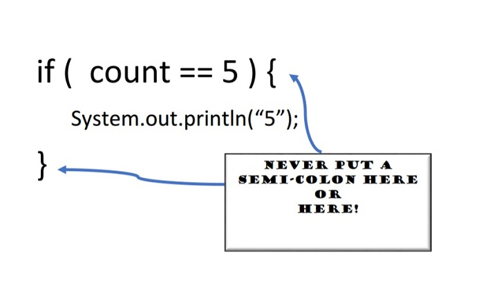

Single Decision Structure
The simple if statement is a single decision structure. It is good for those situations in programming where we need to do something, but only if one specific condition is met. This is an important concepts, if that one condition is NOT met, we do not do anything else, we just skip the if statement and move on.
Some people refer to the simple if statement as an if-then statement or a stand-alone if statement. Think about a door.
IF (the door is locked){
run the unlock code
}
If the door is locked, we have to unlock it in order to go through the door. However, if the door is already unlocked, we do not have to do anything extra, so the unlock code is skipped. The above code is how you could write a simple if statement in a solution algorithm. The below statement is the Java code. Please review the code below.
if (true condition) {
// your brilliant code goes here
}
What is “true condition”?
The condition is the code inside the parentheses that are after the keyword if. The if statement only reconciles its condition as a Boolean expression, something that is either true or false. In fact when an if statement is encountered, the question is being asked “is this condition true”. If the condition is true, the code associated with the if statement is executed.
Be careful, depending on how the code is written, “is this condition true” could really mean “is it true that the condition is not true”.
Please review my examples below. Remember, these are stand-alone if statements so each if statement listed below is evaluated. BUT, the code inside the curly braces of each statement only runs if the condition is true.
int count = 5;
if (count == 5) {
// count IS 5 so I will do this:
System.out.println("The count is 5");
}
//more code here
If the above condition evaluate to false, the print statement within the curly braces does not run. Use a simple if statement when you want the condition to be evaluated, but you do not need further processing if the condition is false. If the condition evaluates to false the code within the curly braces will not run and whatever code you have next runs. Keep in mind, that next code could be the ending curly brace of the method. Just as you learned in the Methods unit, the curly braces say “this code belongs together”. The code inside of the curly braces is also referred to as the body of the statement.
When you compare pieces of data, you are asking “when evaluated is the condition true”. Have you noticed I always say “is the condition true”. That is because it is built into the mechanics of a decision statement to test for true. In programming languages, you use relational operators to compare data.
Relational Operators
We use relational operators to code a Boolean expression. Guess what the condition of an if statement is...a Boolean expression. These next relational operators should be familiar to you. They are used in math and other programming languages. Remember, you use relational operators to test the relationship between two pieces of data.
Equality ( == )
if (count == 5) {
System.out.println("The count is 5");
}
In the code above I used the double equals sign ( == ) or equality operator, to compare the value in the variable count to the number literal, 5. Only if they compared equally, does the condition reconcile to true and the print statement executes. Just as a reminder, when comparing two strings in Java, you MUST use .equals() or better yet, .equalsIgnoreCase(). If you need a refresher, please review the library methods unit.
Inequality ( != )
if (count != 5) {
System.out.println("The value of count is unknown, but I know is it NOT 5");
}
In the code above I used not equal to ( != ) or inequality operator, to compare the value in the variable count to the number literal, 5. Only if count is not 5, does the condition reconcile to true and the print statement executes. Keep in mind, the exclamation point ( ! ) negates a statement and it is sometimes called the “not operator”.
Greater Than ( > )
if (count > 5) {
System.out.println("The value of count is unknown, but I know is it > 5");
}
In the code above I used the greater than ( > ) operator, to compare the value in the variable count to the number literal, 5. Only if count is greater than 5, does the condition reconcile to true and the print statement executes.
Less Than ( < )
if (count < 5) {
System.out.println("The value of count is unknown, but I know is it < 5");
}
In the code above I used the less than ( < ) operator, to compare the value in the variable count to the number literal, 5. Only if count is less than 5, does the condition reconcile to true and the print statement executes.
Greater Than or Equal ( >= )
if (count >= 5) {
System.out.println("The value of count is unknown, but I know is it >= 5");
}
In the code above I used the greater than or equal to ( >= ) operator, to compare the value in the variable count to the number literal, 5. Only if count is greater than or equal to 5, does the condition reconcile to true and the print statement executes. Do not put a space between the operators and always put the > sign first.
Less Than or Equal ( <= )
if (count <= 5) {
System.out.println("The value of count is unknown, but I know is it <= 5");
}
In the code above I used the less than or equal to ( <= ) operator, to compare the value in the variable count to the number literal, 5. Only if count is less than or equal to 5, does the condition reconcile to true and the print statement executes. Do not put a space between the operators and always put the < sign first.
Decision Structure Syntax
Watch your syntax and remember, if statements can execute multiple statements. Which means if the condition is true, all the code between the curly braces will execute. Remember, curly braces say, run the code between the braces as one unit. Equally important is what happens if the condition is false. When you use a simple if decision statement, the answer is the code skips the if structure and executes the next line of code under the statement. In other words, the line of code after the ending curly brace. Keep in mind, that next line of code can be the closing curly brace for the method.
Many beginners get semicolon happy, so please study the image below. Notice where NOT to place semicolons. If you do, your code will not perform as expected because a semicolon says “terminate this statement”.
Detailed Example
Here is a more detailed example of using a single decision structure. This example contains the 5-Step Solution Algorithm including the Java code. I highly recommend that you create a NetBeans project, type the Java code into it, add the comments, and test the program according to the test plan.
What's next?
After carefully reviewing the detailed example linked above, go to the chapter on Dual Alternative Decision Structures..